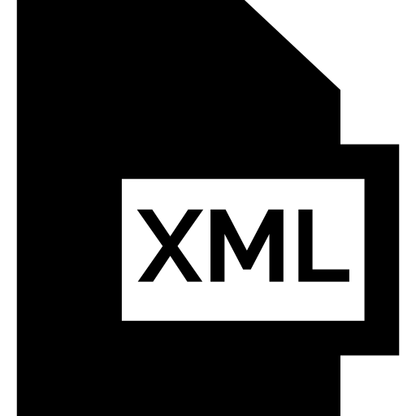
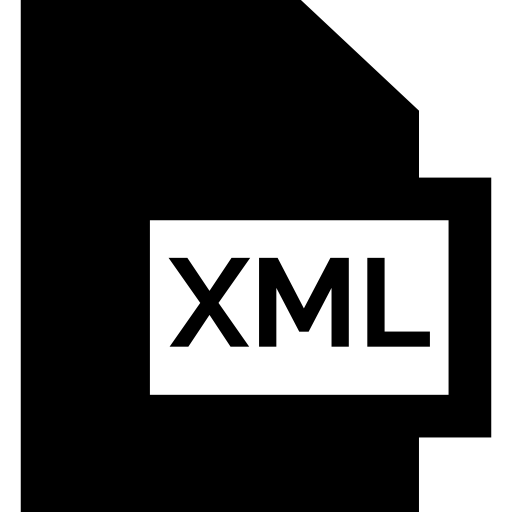

Los contenidos incluidos en esta asignatura abarcan: el reconocimiento de las características de los lenguajes de marcas, los lenguajes para la visualización de la información (incluyendo HTML, XHTML, CSS), los lenguajes para el almacenamiento y transmisión de información (XML), la definición de esquemas y vocabularios en XML, la conversión y adaptación de documentos XML, el almacenamiento de información en XML, la aplicación de los lenguajes de marcas a la sindicación de contenidos (incluyendo RSS).Tambien se conoceran las expresiones XPATH y las palntillas de XSLT.